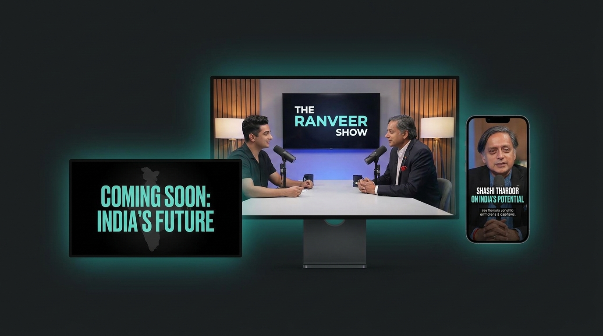
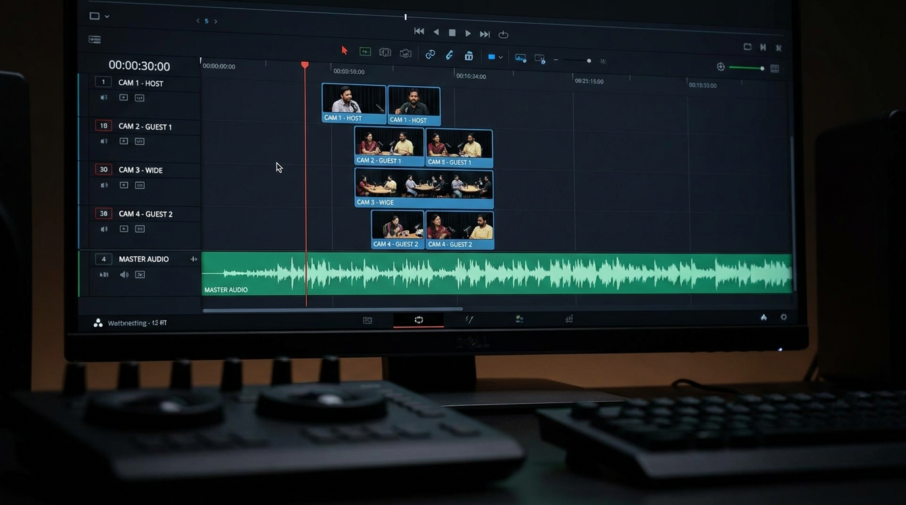
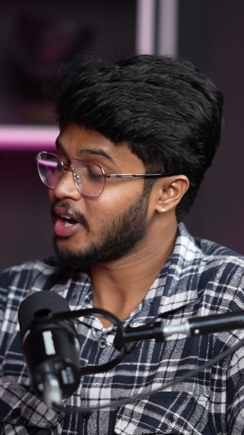
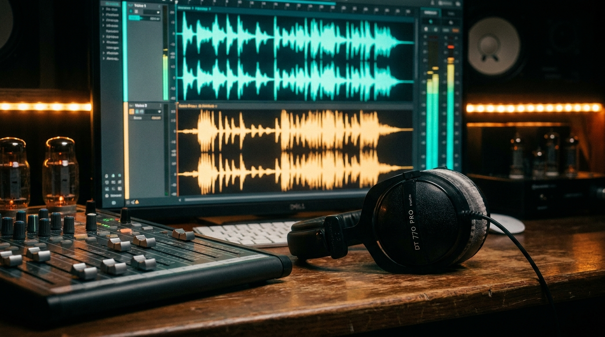
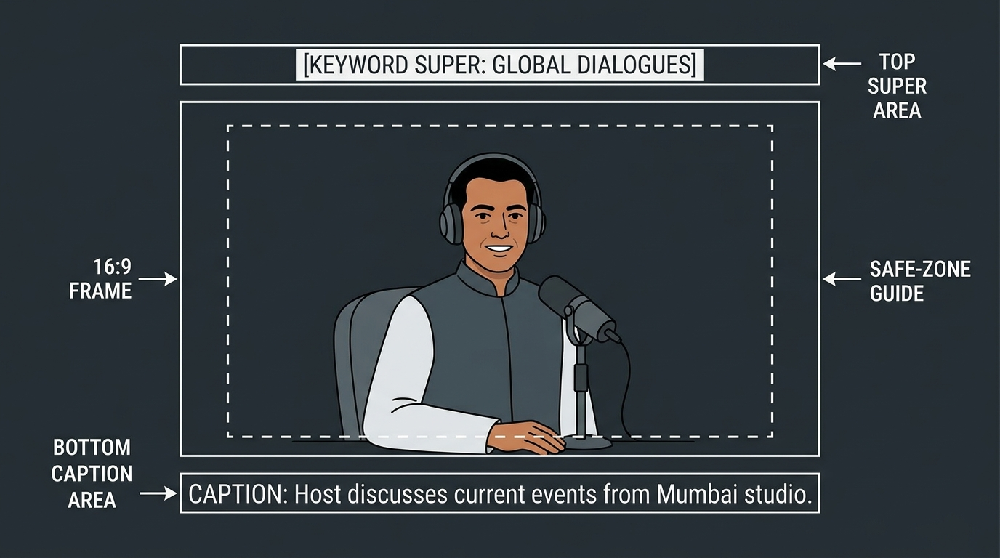
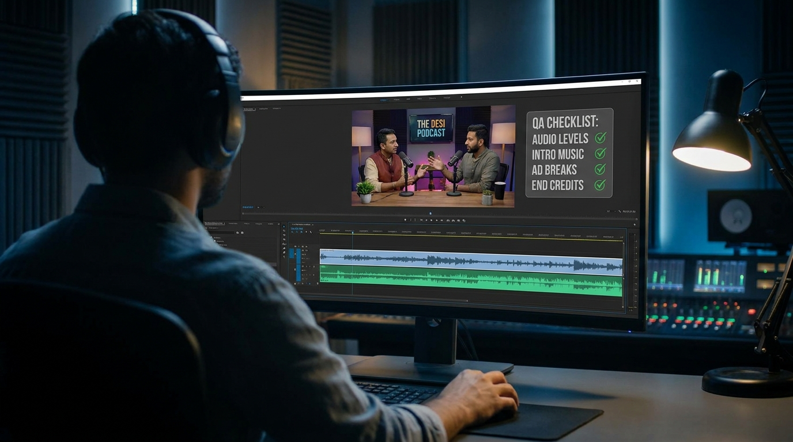
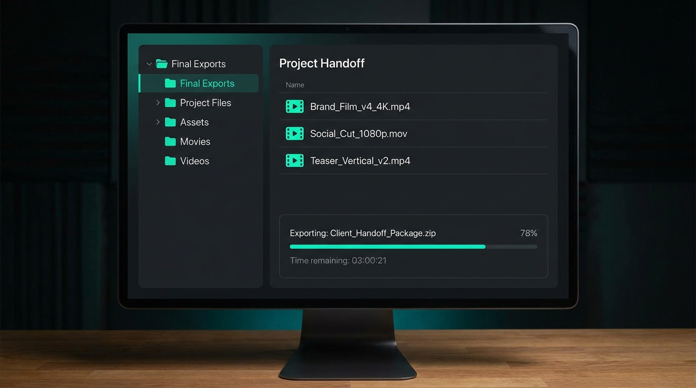

Scope & Deliverables

This SOP covers editing a full podcast episode from raw multi-cam footage to final delivery. Podcasts are always captured on multiple cameras, and the editor receives the video and audio as separate files. From one approved long-form edit, the editor produces the full deliverable set below.
| Deliverable | Ratio | Built from | Ends with |
|---|---|---|---|
| Long-form episode | 16 : 9 | Multi-cam sequence · opens with ≤90s trailer | Standard outro |
| Teaser | 16 : 9 | Long-form highlights | Hook to full episode |
| Shorts (3–5) | 9 : 16 | Pod-manager script | CTA to long-form |
Finish and get sign-off on the long-form first. Only then cut the teaser and the shorts — they inherit the long-form's grade, typography and asset style so the whole set feels like one release.
Before You Start — Intake & Sync

Nothing gets cut until the material is complete, correct and in sync. Work through these five steps in order.
- Get the guest brief from the producerGuest name, title and company, name pronunciation, the topics covered, any sponsor or brand mentions, and anything not to use (off-record moments, retakes, corrections). You cannot title, super or caption the episode correctly without this.
- Collect all footage — every angle, plus audioConfirm you have every camera angle (video) and the recorded audio, delivered as separate files. Check nothing is missing before you build anything.
- Sync audio to video across all anglesAlign the clean audio to every camera so all angles share one timeline. Use waveform or timecode sync — never eyeball it.
- Run the quality checkSync accuracy on every angle, audio integrity (no dropouts, hum, distortion), clip completeness, corrupt or missing files, and coverage gaps where an angle is unusable.
- Flag issues before editing — not afterIf anything is off — missing angle, out-of-sync audio, corrupt clip, unusable coverage — raise it with the producer or the team manager and get it resolved before you start. Do not begin editing on faulty or incomplete media and try to patch it later.
A sync or media problem caught before the edit costs minutes. Caught after the edit, it costs the whole cut. When in doubt, message the producer or team manager first.
Multi-Cam Setup (Mandatory)
Podcasts are shot on three cameras — usually two close-ups (one on each speaker) and one wide combined two-shot. All three angles are edited as a true multi-cam sequence in your editing software — Premiere Pro (Multi-Camera Source Sequence), DaVinci Resolve (Multicam Clip), or Final Cut Pro (Multicam Clip). You cut angles live against a single synced timeline.
Rhythm: open on the wide to establish the room, live on the close-up of whoever's speaking, and cut to the other close-up on reactions and turns. The wide is your reset and your safety angle.
Even if you are only comfortable stacking and hand-cutting clips, that approach is not permitted for podcasts. Manual editing loses sync integrity, breaks the front-then-cross-angle rhythm, and makes revisions painful. Use the multi-cam feature.
If you don't have prior multi-cam experience, reach the pod manager before starting. Get set up or supported — do not fall back to manual editing.
| ✓ Do's | ✕ Don'ts |
|---|---|
| Build one synced multi-cam sequence and switch angles live. | Don't stack angles on separate tracks and hand-cut between them. |
| Establish on the wide, live on the speaker's close-up, cut to the other close-up on reactions. | Don't hold one static angle — or sit on the wide — for the whole conversation. |
| Ask the pod manager for help if multi-cam is new to you. | Don't quietly switch to manual editing because it's familiar. |
Per-Guest Look System
Each guest gets one consistent visual identity, applied uniformly across that episode's long-form, teaser and shorts. Lock these once at the start of the episode and reuse them everywhere.
- Typography — one type system for the whole episode: name lower-thirds, supers, captions and titles. Same fonts, weights and treatment on long-form, teaser and shorts.
- Colour theme — one grade plus one accent/graphic palette per guest, carried through all deliverables.
- Assets — lower-thirds, super styles, transition set and motif stay identical across the set.
Typography reference — the video type system
These are the on-screen text roles every episode uses. Lock one font per role at the start and reuse it across the long-form, teaser and shorts. The samples below are a reference for how each role should read — confirm the exact fonts with the pod manager / Brand Guidelines.
The type system in context — same fonts, colour & treatment on every output
The same roles, burned onto real frames from the episode. One font per role, one accent colour for the highlighted keyword — carried identically from the long-form through the teaser and into every short. Only what shows changes with the format: the long-form and teaser stay caption-free; the short runs a live caption and a CTA.
of EdTech
One font per role, one weight ladder, one accent colour for the highlighted keyword — held identical from the long-form through to every short. The full on-screen text rules live in Universal On-Screen Rules (§09).
One guest, one visual system — the same set, grade and type carried from the long-form through the teaser and into every vertical short.
Different guests can look different from each other. Within a single guest's episode, the long-form, teaser and every short must be visually uniform.
Long-Form Edit Standards
The long-form is a classical, premium conversation edit — 16 : 9, calm, and confident. It is not a reel. The viewer should feel the room and the exchange, not the editor.
The long-form runs without spoken-word captions/subtitles — it's a clean conversation edit. Keyword supers and lower-thirds in the opening trailer are fine; the running caption track is a shorts-only element.
Cold-open trailer (≤ 90 seconds)
Every episode opens with a highlight trailer at the very start, before the intro proper. Cut it from the strongest keyword moments in the conversation to hook the viewer in the first frame.
- Build it from the episode's keywords and standout lines — the sharpest hooks, claims and payoffs pulled from across the talk.
- Keep it to a maximum of 90 seconds; shorter is fine if the moments are strong. Momentum-driven, but still premium and on-brand — not a frantic reel.
- Keyword supers are welcome to punch the key lines; no running caption track.
- Music and light SFX can lift the trailer's energy, then settle into the intro bed as the conversation begins.
- Land cleanly into the standard intro / first beat of the conversation — no hard jolt.
Cutting & pacing
- Cut on natural conversational beats — angle changes on speaker turns, reactions and shifts in energy.
- Keep cuts smooth and motivated. No random jump cuts, no rapid reel-style chopping, no cutting mid-thought for pace.
- Trim genuine dead air, long stumbles and false starts, but preserve the natural rhythm of the talk. Tighten, don't chop.
Colour
- Proper colour correction across every angle so all cameras match — consistent exposure, white balance and skin tone.
- One colour grade for the episode, tied to that guest's look (see Per-Guest Look).
Music & SFX in long-form
Allowed
- Intro / outro bed at a low level.
- Music only under a B-roll or story sequence where it genuinely lifts the moment.
- Minimal, sparse SFX for a light UI or graphic accent.
Not in long-form
- No background music running under the conversation.
- No dominant or attention-grabbing SFX.
- Nothing that competes with the voices.
Keep SFX minimal so the edit stays smooth and premium. In the long-form the voices lead; everything else stays quiet and out of the way.
Short-Form (9 : 16)

Three to five vertical shorts per episode, each a self-contained moment that ends by driving viewers to the long-form.
The pod manager provides a proper script from the transcript for each short when assigning it — the exact segment, in/out points and the beat to lead with.
The pod manager does not simply hand over the project file and tell the editor to "make some shorts from it." Every short is briefed with a script. If a short is assigned without one, ask the pod manager for it before starting.
Build rules
- Cut to the assigned script — don't invent or restructure the moment.
- Reframe from the multi-cam source to a clean 9 : 16 with the speaker well-composed and inside the safe zone.
- Match the teaser and long-form: same typography, caption style, colour theme and asset style. The set must look like one release.
- Captions on — single line, ~16 characters, synced to the voice (see Universal Rules).
- Every short ends with a CTA to the long-form — a clear on-screen and, where scripted, verbal push to watch the full episode.
| ✓ Do's | ✕ Don'ts |
|---|---|
| Work from the pod manager's script and stated in/out points. | Don't guess the segment or freestyle shorts from the raw file. |
| Carry the episode's fonts, colour and caption style into every short. | Don't give shorts a different look from the teaser and long-form. |
| Close on a CTA to the full long-form episode. | Don't end a short cold with no route back to the episode. |
Audio & SFX Balance

The conversation is the product. Mix so the voices lead and everything else supports — clean, balanced and on-spec for delivery.
| Setting | Target |
|---|---|
| Voice / dialogue peaks | -5 dB to -2 dB |
| Programme loudness | -14 LUFS |
| Master ceiling | Never clip at 0 dB — keep headroom |
| Music / SFX under voices | Duck 6–12 dB below the voice |
- Keep voice level consistent across every cut — no jumps between angles or scenes.
- Long-form: no music under the talk; bring beds up only in the intro, outro and B-roll story moments.
- SFX stay minimal and intentional — supporting the edit, never dominating it.
- Use premium-licensed music and SFX only (Envato as the primary source) — never copyrighted, ripped or trending social audio. Save a licence for every asset.
- Clean up hum, clicks and dead air; add short fades in and out — never hard-cut audio.
- Final pass on both headphones and speakers to confirm the voices are clear and nothing peaks past range.
Universal On-Screen Rules

The House of EdTech Editing Guidelines apply to podcasts too — but the two output formats are treated differently on screen. Read this section against whichever format you're cutting.
① Long-form — 16 : 9 (horizontal)
- The full episode and the teaser. A clean, premium conversation frame.
- No running captions/subtitles — the talk plays uncaptioned.
- Text on screen is limited to keyword supers and lower-thirds — the guest's name/title, and keyword punches in the opening trailer.
- Safe zone: keep text, logos and faces clear of the YouTube player UI (bottom bar, top-right, end-screen zone).
② Short-form — 9 : 16 (vertical)
- The 3–5 shorts. Reframed vertical, made to hold attention on a phone.
- Running captions are required — single-line, ~16 characters, synced to the voice, on throughout.
- Speaker well-composed and centred in the vertical frame.
- Safe zone: keep everything clear of platform buttons (right-side action rail, bottom caption/handle area) on Shorts / Reels / TikTok.
Captions & supers
- Long-form: no spoken-word caption track. Use only keyword supers and the name lower-third — never a full running subtitle.
- Short-form: captions on throughout — single-line, around 16 characters, synced to the voice.
- Never split names, word-pairs (like machine learning) or a number from its unit across captions or supers.
- Captions sit low in the safe zone, centred; on a split frame, just above the centre line.
- Supers top or bottom, up to two lines, never overlapping captions; bold only the key keyword in a contrasting colour.
Symbols, safe zones & icons
- Use
₹for rupees and keep every number with its unit —₹999,25 fps. Never write Rs. or 999/-. - Keep all text, logos and faces inside the safe zone for the ratio — 16 : 9 clear of YouTube UI, 9 : 16 clear of platform buttons.
- One consistent icon style across the video (outline, filled or gradient) — source from Flaticon. No mixed, hand-drawn or flat icons.
Logo, B-roll & transitions
- Supplied logo asset only, at constant size and opacity; reveal at the brand mention and the CTA — don't leave it on screen throughout.
- B-roll must reinforce the moment. Real, relevant material only — no filler clips.
- Transitions are motivated, not decorative: clean cuts on the beat, match cuts, quick cross-dissolves. Avoid glitch, wipe, 3D spins and a different transition every cut.
AI-generated assets
- Prefer real footage; use AI visuals only where no real asset exists and it supports the script.
- Regenerate any avatar, image or clip that looks off, uncanny or out of sync before it reaches the cut.
- Match AI visuals to the episode grade and typography; use licensed voices only; proofread every fact, name and price.
- Save the prompt, source and licence for every AI asset in the project's licences folder.
Pre-Delivery QA

The first cut you send for review should already be publish-ready. Run every deliverable against this before exporting — if an item fails, it isn't ready.
- Multi-cam sync holds across the whole timeline; front-then-cross-angle rhythm is present.
- Colour matched across all angles; one grade applied for the guest.
- Long-form is a smooth classical edit — no random jump cuts, no reel chopping.
- Long-form opens with a keyword-driven trailer, ≤ 90s, landing cleanly into the intro.
- Long-form carries no running captions; keyword supers only where used.
- Typography, colour theme and assets are uniform across long-form, teaser and shorts.
- Shorts captions single-line ~16 chars and in sync; names, word-pairs and units kept whole.
- All text, faces and logos inside the safe zone for each ratio.
- Audio: voices lead, peaks -5 to -2 dB, -14 LUFS, master never clips; short fades in/out.
- Long-form has no music under the conversation and no dominant SFX.
- Every short ends with a CTA to the long-form; the teaser hooks to the full episode.
- Ratios correct — 16 : 9 long-form and teaser, 9 : 16 shorts.
- Spelling checked across video and subtitles; every third-party asset is licensed.
- Files named to convention and the project backup is packaged for handoff.
Naming, Backup & Accountability

File naming
Podcast files follow the House underscore convention — every field in order, no spaces. Confirm the exact product prefix with your pod manager.
POD_[GuestShortName]_[EP##]_[Deliverable]_[Ratio]_v#
Deliverable codes: LF long-form · TZ teaser · SF01–SF05 shorts. Ratio: 1609 or 0916. Append _FINAL and freeze changes on the final cut.
POD_RaviKumar_EP07_LF_1609_v2.mp4 · POD_RaviKumar_EP07_SF01_0916_v1.mp4
Project backup & handoff
Podcasts are not ads — so the editor hands over the complete project backup with all project files: project/source files, the multi-cam sequence, linked footage, graphics, audio and licences, packaged and named per convention. This is separate from the shorts-assignment rule in §06 — that's about how the pod manager briefs shorts, this is about your end-of-project handoff to the company.
Accountability
The editor owns the cut end to end — a complete, correct, review-ready set, not a rough draft for QC to clean up. Proofread spelling across the video and subtitles, and make sure any on-screen prices match the current landing page.
Producer / team manager — footage, sync or media problems found during intake. Pod manager — no multi-cam experience, or a short assigned without a script.